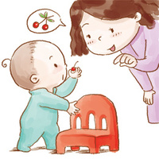

男婴：体重8.9-11.0kg，身长72.2-77.6cm，头围46.3cm，胸围46.37cm。
男婴：体重8.9-11.0kg，身长72.2-77.6cm，头围46.3cm，胸围46.37cm。
女婴：体重8.2-10.3kg，身长70.3-75.8cm，头围45.3cm，胸围45.3cm。
生理发展：
沿着家具扶走。
心智发展：
会模仿大人语言的旋律、音调变化和面部表情。
感官与反射：
可以捡起小东西。
社会发展：
不会总是合作。
碰到陌生人会退缩。